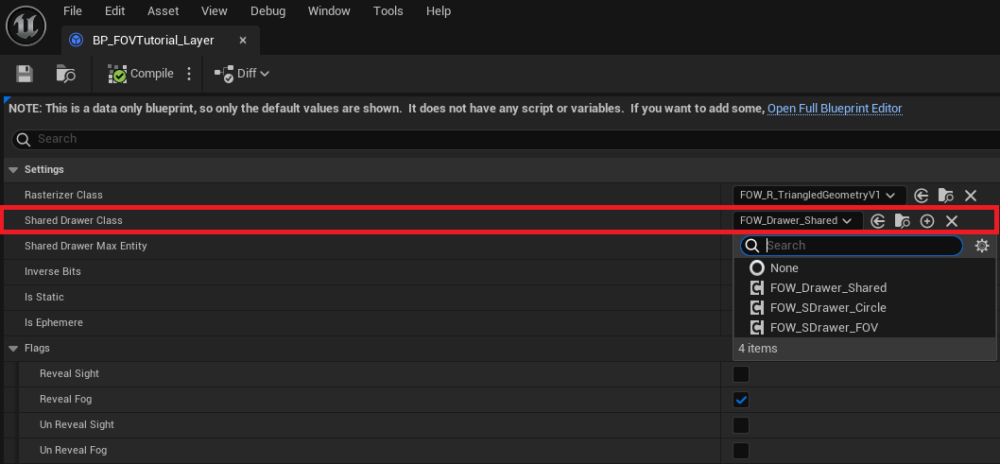
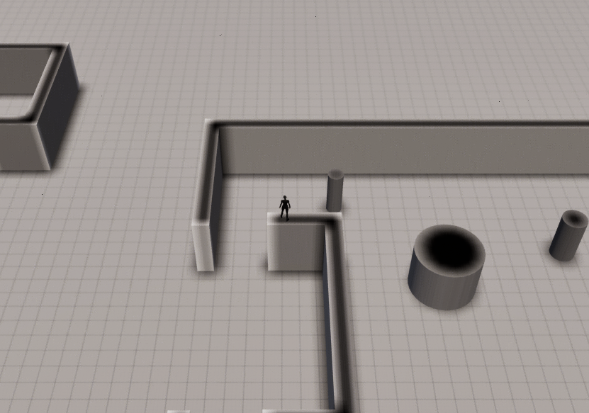
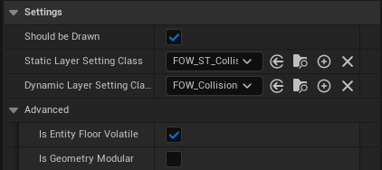
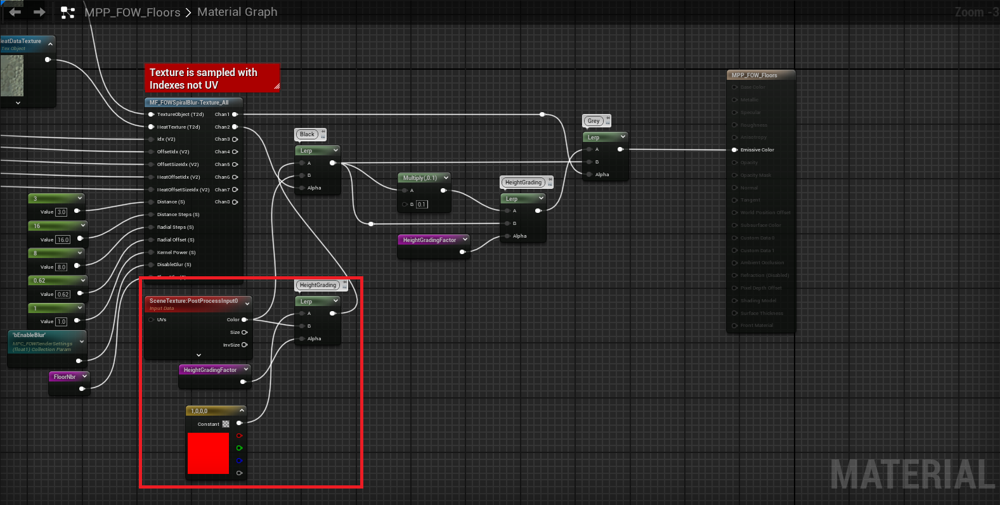
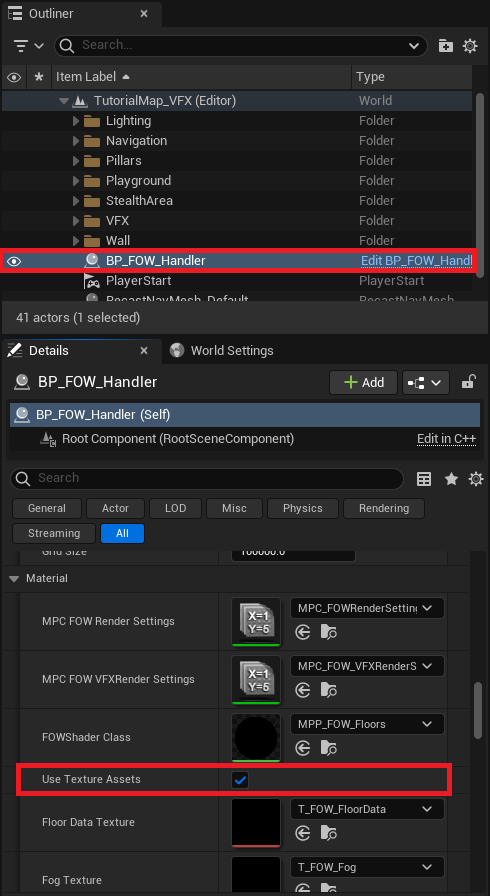
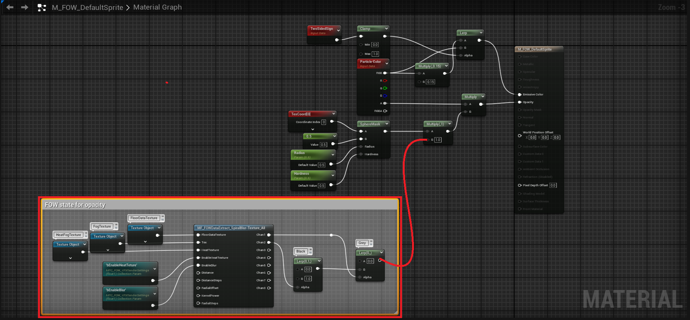
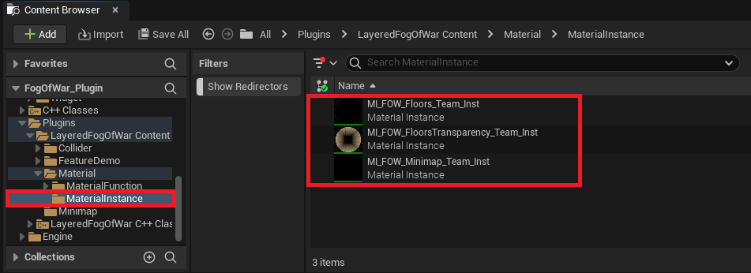
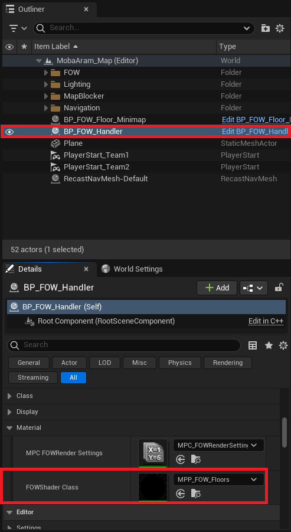
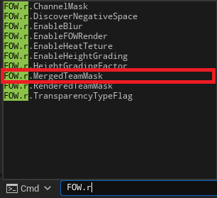

Contents
Documentation built with Unreal-Doc v1.0.9 tool by PsichiX
Book
This book provides an in-depth explanation of the Layered Fog Of War architecture. It includes implementation examples, code explanations, and guidance on maximizing the utility of the FOW. While this plugin is straightforward to use, understanding it thoroughly may become challenging when striving for improved performance.
/!\ The links under apparently don't work, I'm trying to figure it out, please use the links on the left
Pages
Documentation built with Unreal-Doc v1.0.9 tool by PsichiX
Getting Started
Table of Contents
The Fog Of War is Only a Texture
Understanding the technology requires seeing the Fog of War (FOW) as a texture:
By utilizing a texture, it should be possible to create games with a "flat" map. Gameplay areas cannot be superimposed, or undesirable parts of it will be revealed. However, by employing multiple layers and applying transparency, this issue can be addressed.
Quick definition: The fog of war is a common game mechanic used in strategy and real-time strategy (RTS) games to simulate uncertainty and limited visibility. It obscures parts of the game map that are not currently within the player's line of sight or knowledge, typically represented by a shroud or darkness.
FOW is merely a set of data represented as a texture, allowing the computer to conceal some parts of the rendered frame from the player during the post-process pass. It will project the position of the rendered pixel onto a plane delimiting the FOW. The projection will then query the state of the fog texture to determine if the player has sight on this pixel. It's a simple process of flattening all the assets onto a plane.
The texture generation is carried out by elements called "Drawers"; they compute a texture fragment of what they see. Drawers can draw any shape to reveal an area, with two primary usages: drawing circles to reveal everything around the player and casting the collision geometry shadow to simulate the player's sight.
Once every fragment is generated, they are merged under the fog texture to be rendered.
Features
High Definition, Big Map
1. Introduction
The Fog of War algorithms are simple in theory but resource-intensive to update. To maintain a decent frame rate, texture precision needs to be downgraded to reduce rasterization time of the drawers, texture update time on the GPU, or GPU texture sampling time. The heavy fog update also posed obstacles for game development. Maps had to be small for high fog definition, or the definition had to be low for huge maps. I've aimed to prevent this and allow everyone to choose any precision without repercussions.
2. Handler, Floor, Tile, Sample
The Fog Of War is divided into floors representing parts of your level. You can have as many as you want, and they can be juxtaposed or even superposed to add verticality. Every floor shares the same settings provided by the handler and will have the same precision. They are also divided into tiles and snapped to a grid to simplify the merge and update process. The FOW can have up to 8 visibility channels to represent fog, but only 2 channels are used in the given version to represent 3 states of fog:
- Seen: The player has visited the area and is aware of its layout.
- Visible: The player directly sees the area.
- Unseen: The player has never seen this area (meaning both channels are equal to 0).
It's up to you to find more uses for the other 6 channels. You can also use only one channel to create MOBA-like games where the map is fully visible.
3. Optimization for Large-Scale Projects
To overcome update time, the FOW uses fog samples sent to the GPU and binary compression of everything related to a texture. They are compressed such that 1 bit equals 1 pixel. This reduces memory usage and pixel processing time through bitwise operations. Most of the update work involves merging two textures, applying an "OR" operator between them. Since all pixels are packed and computers can use registers up to 512 bits, the FOW can compute up to 512 pixels in one operation.
4. Architecture Repercussions
To allow the best usage of binary operations, channels had to be separated and can be seen as N different textures. Simplified representation of the texture:
Normal texture: -> FOW texture:
RGBA, RGBA, RGBA -> RRR, GGG, BBB, AAA
RGBA, RGBA, RGBA -> RRR, GGG, BBB, AAA
RGBA, RGBA, RGBA -> RRR, GGG, BBB, AAA
Tons of AI
1. Introduction
Projects utilizing FOW primarily involve games with extensive AI usage. One of the primary objectives was to simulate thousands of units drawing fog. This plugin needed to be adaptable for games like "Among Us" as well as for RTS or MOBA games like "Age Of Empires" or "League Of Legends." Once again, performance was a concern and needed to be addressed without compromising precision or map scaling.
2. Drawer, SharedDrawer, Entity, Rasterizer
Each player controls a number of units within the game, aiding in navigation, exploration, and achieving game objectives. To explore the game's layout, the FOW employs Drawers. These drawers are components registered within the FOW, generating fog fragments represented as bit arrays. These fragments depict the sight of the owning actor, capable of drawing any shape and providing its fragment during floor updates to generate the Fog Texture. However, merging thousands of fragments is inefficient, consuming excessive memory, lacking alignment, demanding significant CPU cache, and failing to adhere to patterns that accelerate computation. To improve this process, the FOW follows Data-Oriented Design (DOD) principles and enables developers to utilize Entities instead of drawers. Entities represent objects in the game and supply data to a "SharedDrawer," which updates all registered entities during a single update.
To generate a fog fragment, each drawer has a reference to a rasterizer. Drawers serve as data containers designed to generate geometry provided to them. They are simple code components that can be overridden for specific purposes. Currently, two rasterizers are available:
- UFOW_R_TriangledGeometryV1: Draws convex geometry from a set of vertices
- UFOW_R_CircleV1: Draws a circle from a single vertex
3. Optimization for Large-Scale Projects
To expedite fragment generation, the FOW packs data and adheres to DOD architecture. It utilizes multithreaded processors through asynchronous updates, allowing discrete updates that do not interfere with the game thread. In cases of heavy updates, the FOW can be computed across multiple engine frames to prevent game freezing.
The DOD and task system serve as entry points to GPU computation. Every effort has been made to facilitate this and may be further developed in the future.
Vertical Games
Introduction
Enabling the creation of vertical top-down games for everyone has been a challenge. I participated in the development of "Alien Dark Descent," where implementing ladders and stairs proved difficult. However, the Fog of War (FOW) couldn't distinguish between the bottom and the top, making it impossible to allow players to explore the ground level and then the basement without a level transition. As mentioned earlier, the Layered FOW comprises floors that can be placed anywhere in the game. They generate fog in the designated area, which drawers subsequently remove. No additional user input is necessary to introduce verticality!
GPU Data Transfer
Due to the GPU's limitations, it was challenging to send N textures representing the fog of floors. Additionally, the update process would have been overly burdensome. It was necessary to devise a method to transmit data for each floor. This issue was addressed by packing floor fog samples into one texture, with sample sizes determined by the intersection of the camera frustum and the floor fog plane. However, updating every floor will require a larger texture.
To correctly render superposed floors, the material must project and identify the closest floors to query the fog state.
Networking
Introduction
Most top-down games we play are competitive or cooperative, necessitating networking. In this regard, the FOW features minimal Replication implementation. It operates on the premise that every player runs the same simulation, meaning every client actor shares the same position as the server. If this condition holds true, there is no need to replicate the FOG state over the network; the only synchronization required is determining which drawer represents which team.
FogStateReplication Client/Server
FogStateReplication facilitates synchronization between the client and the server. It manages fog synchronization; the server can send the FOW state to any client for game initialization and assigns a team ID to each client. This ID is utilized in each game instance to enable/disable drawers associated with the same ID. Once the state and IDs are synchronized, no further FOW-related data is transmitted over the network.
Replication and Team Limitation
To enable FOW state replication, the server must be aware of the state of each team. This means that a game using 2 channels to represent "Seen" and "Visible" states can only accommodate up to 4 teams. As discussed earlier, the FOW can utilize a maximum of 8 channels. Replication not only limits the number of teams a game can have but also imposes performance constraints. The server user must continuously compute the fog for each team, even if only 1 team is displayed. Clients do not encounter this performance issue as they only update the attributed team.
However, there is a workaround to mitigate this limitation. The server can be instructed to compute only for the user's team. While the network will still function, FOW state synchronization will not be possible in case of a late connection. It's important to note that synchronization is only necessary for a specific type of fog. Clients do not require synchronization if the game employs the Visible channel. Once all drawers are synchronized with the correct team, they will remove fog at their location to replicate the server's state.
In summary, FOG state replication is possible but limited by the number of channels used per team. Alternatively, allowing the server to compute the fog based on the player's ID removes this limitation, enabling as many teams as desired!
Developer Playground
Introduction
This section is somewhat personal. I aimed for my plugin to be modular, with interchangeable parts. I've always believed that a better version exists, leading me to segment my code and make it replaceable. This approach has become a pattern for me, creating small modules and minimizing dependencies. Accordingly, the plugin includes numerous settings variables representing object classes to replace the provided ones.
I call it a playground because it allows for simple modifications to test C++ functionality. There are numerous modules that serve as containers for experimentation, enabling users to swap arrays for maps or add acceleration structures to aid in query functions. For example, I've created a naive collision system that tests collisions with every registered collider, as well as another using an AABB tree for querying colliders within bounds.
This is Where the Fun Begins!
I aim to provide everything necessary for users to replace modules and experiment with the code in the source files. Here is a list of the modules and their intended use:
- UFOW_Rasterizer: Experiment with the fastest way to draw a triangle or develop rasterizers specific to drawing geometry from formulas (e.g., Cone, torus, rectangle...)
- UFOW_CollisionHandler: Crucial for drawer computation time when casting collision shadows. Accelerate collider querying with structures (e.g., AABB tree, Spatial hashing, octree...)
- UFOW_OcclusionBuffer: Implements an occlusion system for the CollisionHandler to ignore colliders. Research and development around occlusion, with the default using a 1D depth buffer.
- TFOW_Tile_Base: Merges drawer fog fragments. Experiment with SIMD instructions and find a faster way to merge everything.
- UFOW_DrawerComponent: Implement custom drawers. Experiment with tasks and multithreading.
- UFOW_SaveLoad: Generates a TArray
to be written in a file. Experiment with pointers and compression. - AFOW_FogStateReplication: Adapt the network to your pipeline.
- AFOW_Handler: Adapt the loading or update pipeline.
- UFOW_Floor: Adapt the update pipeline.
Conclusions
Everything functions correctly by default, but users may need to adjust some settings and have a good understanding of how entities work for games with extensive AI usage. Vast games without vertical limits can be created, and a simple replication implementation allows for the creation of online games. Curious users are encouraged to replace everything and experiment!
Documentation built with Unreal-Doc v1.0.9 tool by PsichiX
Architecture
This section will explain in-depth how the Fog Of War has been thought out. It'll give you the keys to tweak everything and set up the plugin to fit your game the best possible way.
Keep in mind that the Layered FOW doesn't need any modification to be used in game; only if performances are an issue, modifications will be necessary.
Everything is Tile-shaped
To allow high precision and large scale game, everything has been cut into pieces which can be seen as tiles. This tiling system is really efficient for optimization and multithreading. The FOW is designed this way:
FOWHandler: the biggest piece holding every data. It's a singleton, and only one instance can exist in the level.FOWFloors: 3D boxes held by the Handler, where the fog will be applied. There is no number or position limitation. It will store a bits array of the fog state and everything necessary to generate fog fragment.FOWTiles: Defined by a power of 2 of fog pixels, it will create a grid for every element interacting with the fog. Used to merge fog fragment to the result texture in the Floors.FOWTextureSample: The bond between CPU and GPU, it will collect Floors bit array to send it to the GPU via a texture.
The logic is managed by Entities
The Entities are a suite of interfaces allowing data generation or querying. They are self-dependent and don't need any update, no API is provided unless two methods to enable/disable the entity. The FOW will do all the updates it needs to correctly generate the fog state of the frame. Entities exist in 3 different forms inheriting from a base interface, plus one a bit different, designed for a late purpose:
CollisionEntity: Provide methods to gather collision from an object. Collisions are used by the drawers to cast shadow. The entity will be stored in CollisionHandler.DrawingEntity: Provide methods to collect drawing settings from an object. The entity will be registered to shared drawer to generate fog fragment.VisibilityEntity: Provide methods to collect object size and location to update its visible state depending on the fog.GeometryEntity: It doesn't derive from the Entity base class; its purpose is to hold geometry data to be used by entities (calling it GeometryEntity was a mistake).
/!\ The links under apparently don't work, I'm trying to figure it out, please use the links on the left
Pages
Documentation built with Unreal-Doc v1.0.9 tool by PsichiX
Handler
Table of contents
Explanation
The AFOW_Handler class is a singleton used to store Floors and manage Fog settings such as Pixel size, Encoding,
and Collision system. It defines the initialization and update loop. All initialization happens during the begin play unless
for the floor generation that is instantiated straight into the editor.
Settings
Editor debug setting
ShowGrid: display the grid delimited by the tile. Floors are snapped to this grid.ShowFloors: display the 3D box representing the floors. The pink square is the real position of the floor, it will be aligned to the grid. The yellow square is the 3D Fog representation.
Fog setting
PixelSize: lets you adapt the fog precision, the value is expressed in centimeters.FOWFloors: lets you create new game areas with fog.TilePixelNumber: lets you change the tile dimension by modifying their pixel number. Changing tile size might become interesting for high fog precision, it will reduce the number of tile merging and will allow the usage of bigger registers for the merging.ChannelToClearAtStart: lets you choose the default fog status at start. Useful if you have a map with hidden area and the rest visible. UseAFOW_DrawingE_CustomwithUFOW_FloorStartUpLayerto add fog where it's needed. Fog will be cleared and redrawn during the initialization and the very first frame.LayerHandler_Class: lets the possibility to the user to organize the layer merging.FOWFloorTiles_Class: lets you choose the number of channels used by the game. It is also designed to select the computation method of tile merging. Warning register used cannot be bigger thanTilePixelNumber.
Update settings
FOWComputeSetting: Change the right of the FOW to use or not multithreading/Task/ComputeShader (compute shader not done yet).FOWUpdateRate: Change the update rate of the FOW. However I do not recommend to use it, render will be impacted and become less smooth. I recommend to enable task and let the FOW do discrete updates.
Module settings
Modules that can be changed in the handler are stored under the Settings|Class section. There is a differentiation between static
and dynamic because some modules can be more or less optimized depending on those two parameters (The AABBCollisionHandler has an
update time super long for dynamic objects).
Rendering settings
FOWShader_Class: change the render system of the FOW. 3 different materials are provided with the plugin:MPP_FOW_Floors: for flat gameMPP_FOW_FloorsTransparency: for games with verticalityMUI_FOW_Minimap: for the minimap
Initialisation
The initialization of the FOW happens in the begin play and can be delayed if your pipeline needs it. Initialization is split into many sections:
InitNetworkwill create a Replicated environment only if the game isn't standalone and if the Network setting class is correctly set. Set network setting has the right to override many values from the Handler to provide the accessibility to different clients. Thus it has to be executed first.InitTeamsisn't used and will be deleted.InitFOWFloorsTiles: Allocates the memory used by the floor. The FOW cannot do anything without it. The tiles must be initialized before the game shader.InitGameShader: GeneratesFOWTextureSamplethat will be linked to the instantiatedFOWShader_Class. You can override this to generate more material if needed. However, you have the possibility to create and register texture sample at any time; don't force yourself to do everything in this method.InitFOWUpdateis the most interesting method. If you have pipeline trouble, I recommend to let every other initialization call and to delay only this one. Until this call is made, no update from the fog but even from this entity or the collision system will happen. Please be very cautious to callFinalizeInitializationjust after the call of this method.
Visual representation of the initialisation pipeline

Updates
By default, the update happens during the actor tick. Every component of the FOW will be updated during this sequence unless for
the FOWTextureSample. The update will be done at once if no asynchronous tasks are requested and will be managed by two methods:
FOWUpdate_Beginmanages every update that needs to happen to let drawers generate fog fragment. It'll update the dynamic Entities first and then the collision. It will also be responsible for multithreading initialization.FOWUpdate_Endis called after that the drawers have generated their fog fragment. Depending on the usage of task or compute shader, it'll be called right after the begin update or later in the frame. Fog fragment will be sorted and distributed to floors to update the fog state. Once updated transient drawer will be deleted and all "visibleEntity" will update their state to turn on/off their render.
The FOWTextureSample has a special place to be updated because of the engine camera update time. To generate fog sample the sample
has to be aware of the position of the camera; however, Unreal updates their position at the end of the tick. To prevent sample from
sending wrong texture information, their updates happen at the very end of the world tick. There is a second reason of why their update
is separated and independent. In case of long update, the FOW can skip an update frame if using asynchronous update. It doesn't impact
the render to not change the fog state, however, fog data on the GPU has to be perfectly synchronized with game or artifacts might show up.
Visual representation of the Updates pipeline

Documentation built with Unreal-Doc v1.0.9 tool by PsichiX
Floor
Table of Contents
Explanation
The AFOW_Floor class represents 3D boxes held by the Handler, where the fog is applied. The fog is stored in a "bit array"
that is updated and sampled every frame. The update is facilitated by the TFOW_Tile_Base class, which shares the bit array pointer to
allow multithreading and prevent unnecessary updates if no Drawer fragment has updated the tile area. Floors contain all the entities
within them, registered in:
UFOW_Drawer_SharedforUFOW_DrawingEntity_Interface, with the base class defined inFOW_LayerSettingUFOW_CollisionHandler(static/dynamic) forUFOW_CollisionEntity_Interface, with the base class defined inAFOW_HandlerUFOW_EntityVisibilityHandler(static/dynamic) forUFOW_VisibilityEntity_Interface, with the base class defined inAFOW_Handler
Settings
You'll find a few settings to configure the floors in your environment:
FloorLocation: defines the center of the floor.FloorExtend: defines the 2D extent of the floor.FloorZExtend: Represents the height of the fog. X represents the fog under the floor center, and Y represents the fog above the floor center.bOverrideChannelToClearAtStart: Allows you to override theFOW_Handlersetting of the fog state at start.bSnapFloorExtendToGrid: Snaps the floor extent to the tile grid.
Fog Update
Every update is called by the handler, with four main updates:
UpdateCollision: done duringFOWUpdate_Beginby theUFOW_CollisionHandlerUpdateFogState: done duringFOWUpdate_EndUpdateVisibleEntityState: done duringFOWUpdate_Endby theUFOW_EntityVisibilityHandlerUpdateFogTextureSampleorGetFogTextureSampleRegions: done duringUpdateTexture. This update is special and cannot be changed; it's bound toFWorldDelegates::OnWorldTickEndto ensure the position of every game camera.
The fog state is a heavy update which merges fog fragments of every Drawer. To achieve this, both the fragment and the floor's bits
arrays are sliced into tiles. Tiles are instantiated and stored in floors, they all derive from TFOW_Tile_Base. It facilitates the
transformation of Drawer data into a readable texture from the GPU. Each tile receives arrays of pointers linked to Drawer fog fragments;
if the array is empty, the tile is skipped and reset if updated during the previous frame. The fog state generated depends on the
UFOW_LayerSetting bound to the Drawer and by the UFOW_LayerHandler, which provides the update order. The LayerSettings are non-instantiated
classes that convert all their Settings into a flag. They are read by the Tiles and interpreted as the code writer intends. Every modification
regarding channel behavior or computation will require another Tile class.
Visual Representation of the Updates Pipeline
Documentation built with Unreal-Doc v1.0.9 tool by PsichiX
Layers
Table of Contents
Explanation
Layers are the representation of a rendering pipeline. they define how a fog fragment impact the fog state
and are applied in a given order. The UFOW_LayerSetting will be the class used by every drawer tp define
their behavior. The UFOW_LayerHandler is held by the FOW_Handler and will be the pipeline reference for
every fog state update.
Layer Settings
There isn't any logic, except converting settings to a flag mask, in the LayerSettings. They have been
made to simplify the pipeline understanding, to help when custom configurations are needed and to enable
or disable optimization.
About the generated settings flags, you have to understand that they mean nothing without a TFOW_Tile_Base
able to read it. The flag mask is an int32 with only 4 bits used. This means that you have the possibility
to create other settings to provide to the Tiles if you want to create new channels or if other conditions
are needed for your fog to be computed.
Rasterizer
The Rasterizer Class lets you choose which rasterizer will be used by the Drawer for the fog fragment
generation. Depending on the situation, a specialized rasterizer can be a real gain and improve the performance.
As an example, two rasterizers are provided in the plugin:
UFOW_R_TriangledGeometryV1: used to rasterize convex geometry with the vertices correctly sorted.UFOW_R_CircleV1: used to rasterize circles only. It will read geometries one vertex by one and use them as a2D positionand aRadius.

Rasterizers define how geometry will need to be provided. You can create others to fit specific cases or to optimize the rasterization process.
Shared drawer
The Shared Drawer Class allows you to choose which drawer class will be used for the update of Entities.
The Drawer will then be instantiated and contained by a Floor. Every Entity contained in the floor will be
provided to this drawer, which will ensure the generation of the fog fragment. There are 3 kinds of shared drawers:
UFOW_Drawer_Shared: will query geometry from entities and rasterize it on the fog fragment. UseUFOW_R_TriangledGeometryV1as Rasterizer.UFOW_SDrawer_Circle: will query geometry from entities, however, it's designed to receive a single vertex per entity to draw a circle. UseUFOW_R_CircleV1as Rasterizer.UFOW_SDrawer_FOV: will query position from the entities to compute shadow geometries from theCollisionHandler. Then, every shadow is rasterized. UseUFOW_R_TriangledGeometryV1as Rasterizer.

Shared drawer is responsible for querying data from geometries and to provide it to the rasterizer. They will
also be responsible for choosing how the fog fragment will be computed:
- Game thread
- Game thread with parallel for
- Task
- Compute shader (Not provided yet)
You are free to create others to improve or make them fit to your game pipeline.
Shared drawer max entities
This setting only makes sense if multithreading or compute shader are enabled.
The Shared drawer max entities value is an optimization variable. It is used to limit the numbers of entity
per Shared Drawers. The meaning behind this isn't that your game will have a limited number of entities but
that another drawer will be instantiated if one is full. This will allow the system to create many tasks instead
of only one if you have lots of entities sharing the same LayerSettings.

If you let the variable be 0 or less, Shared Drawers won't have entities limit and will be updated like so:
- The red square represents 2400 drawers computed in 1 thread.
- The green square represents the start of the fog fragments generation.
- The blue square represents the end of the fog fragments generation.

If you increase the limits (500 was used for the example), multiple Shared Drawers will be instantiated
and your computer will take benefit of the other cores in the processor:
- The red square represents 2400 drawers computed in 5 threads.
- The green square represents the start of the fog fragments generation.
- The blue square represents the end of the fog fragments generation.

Caution, update task might become too present to let the Engine start its own. It might be more interesting to accept lots of entity per drawer which might reduce the fog state refresh rate instead of the whole game frame rate.
Inverse bits
The Inverse bits is a parameter for the rasterizer. This will tell the rasterizer to draw the geometry with 0
instead of 1. It is only used when geometry shadows need to be represented. Those drawers will entirely reveal
their fog fragment and hide parts with collision geometry. There's no need to understand what it really does,
just turn it on if the drawer will cast shadows.

Static drawer
The Static drawer value is an optimization variable. By setting it to true, you tell the system that all entities
provided won't move. This means that the entities will generate their fog fragment only once until one of them moves
or if an Entity is added or removed. This parameter is mostly used by the collider to reduce the number of triangles
rasterized to represent their shadows.

Transient
It simplifies the implementation of one or a few frame drawing drawers. It's often heavy to write delegate and bind to the system to ensure at least one update. With this enabled, the system will try to destroy the associated drawer every frame.

You might not want to draw for only one frame, in that case, you can override RequestDestruction in CPP and BP to
add a timer or verify a condition before calling DestroyAndUnregister.

Layer Handler
Layer Handler is a class made for global settings regarding the update pipeline of the fog state.
Collision drawing
The Collision drawing is an optimization variable. It's disabled by default because of the issues it can bring to
the render. If enabled, all colliders will have the possibility to draw their collision geometry to a Shared Drawer,
only if ShouldBeDrawn is set to true in your CollisionEntity.

The problem behind this optimization is that the collider will always display their shadow even if you are over them. It'll be mostly annoying for games with verticality.

To resume, if your game doesn't use fog verticality, you're advised to enable it.
Computation order layer class
The Computation order layer class array will define the update order of the fog fragment. All of them are bound to
a LayerSettings and need to be merged to update the fog state. This array lets you modify the merging order. All of
the LayerSettings used in your game have to appear in this list or you will trigger an ensure. Be careful when re-ordering
it, you might create unwanted results if you don't pay attention between layers removing fog and layers adding fog.

Documentation built with Unreal-Doc v1.0.9 tool by PsichiX
Network
Table of contents
Explanation
The Layered Fog of War is ready for online games but requires a good understanding of the replication provided by Unreal,
and how the LFOW uses it. To begin with, the Fog State isn't replicated; it can be synchronized to the client, but the
LFOW will never continually send fog data over the network.
The LFOW relies on the simulation, ensuring the state of the server and the client remains the same as long as the
position of the drawer is replicated and correctly updated. In case of latency or client disconnection, the LFOW server can,
as mentioned earlier, synchronize and send the fog state through RPC to the clients.
The plugin includes the concept of teams, which can be seen as data duplication. If the LFOW is set up with 2 channels and
3 teams, it will use 6 channels internally. Currently, it can only manage up to 8 channels, which means a maximum of 4 teams
with 2 channels each.
However, many games don't need to synchronize the Fog State and rely only on the simulation. MOBA games like League of Legends or Dota will only use a single channel to represent what is currently visible. For games using such a setup, the
team limit disappears.
See the Networking turorial for implementation.
Network Settings
The UFOW_NetworkSettings class is designed to override the FOWHandler variables for online games and set up different
behaviors depending on the Net Status. Server, Client, and Spectators require more or less data to be computed by the
LFOW. For example, a Client only needs to compute the state of its team since it should never see what the opponent sees.
However, the Server needs to store the state of each team in case of client re-synchronization.
Fog State Replication
AFOW_FogStateReplication is the base class for every Online game instance implementing the LFOW. The server will have
its own class and will spawn a new one for every client. It will manage the network used by the plugin, handle connection and
disconnection, and provide useful RPC to synchronize every game instance. For now, it will only attribute a Team ID to
every client which is replicated and provide methods to synchronize the Fog through RPC if needed.
Server
AFOW_FogStateReplication_Server handles all client connections and provides a Team ID to every AFOW_FogStateReplication_Client.
To gain full control of the IDs distributed, you can override GetClientTeamIndex, allowing you to return any value. See the
Networking tutorial for more information. If the fog is replicated, be aware that any team ID higher than the maximum team limit won't work.
You will find two multicast methods that I've written as examples. I'm not sure of their efficiency, so please don't use them:
MulticastRPC_AddDrawer, deprecatedMulticastRPC_RemoveDrawer, deprecated
Client
AFOW_FogStateReplication_Client lets you override a few methods to insert or call whatever you want between the connection steps.
The ServerRPC_RequestFogStateSynch RPC lets you request the server to synchronize the fog state if replication has been enabled
in the network settings. You will find a few parameters to manage automatic synchronization or the cooldown time between requests:
MinimumTimePerFrameBeforeSynch: The refresh rate threshold in ms before the automatic request of the FOW sync to the server. Set a large timer if you don't want automatic sync.SynchRequestCooldown: Cooldown to prevent the client from DDOSing the server.
What is Replicated
Since the fog state is not continuously replicated but merely synchronized and then simulated, you might wonder what is actually replicated. Only two concepts use replication to allow a fast implementation of the plugin:
Client Team ID: This important value is used to request the correct fog channels from theServerwhen synchronization is required. It is also necessary to attribute ateam IDto anything modifying the fog.Drawing Components Team ID: Every drawing component's team ID will be replicated and can be changed by the server without worrying about the network stack.
Conclusion
The LFOW plugin replication implementation is very lightweight and doesn't provide much assistance for the development of
online games. The main reason for this light implementation is to avoid overloading the bandwidth and to prevent forcing its
use, as many games like RTS use simulation to avoid the replication of thousands of units. This means that developers will
need to implement events themselves to control the status of the Components and Entities.
Documentation built with Unreal-Doc v1.0.9 tool by PsichiX
Game Template
Here you will find all the templates provided to make games with the LFOW.
/!\ The links below apparently don't work. I'm trying to figure it out. Please use the links on the left.
Pages
Documentation built with Unreal-Doc v1.0.9 tool by PsichiX
MOBA Template
This tutorial is about making an online MOBA game with the LFOW enabled. I've created a lightweight template for you to migrate to your current project under UE5.4.
You will find the template folder in the content folder provided in the Demo Project
The template includes:
- Create/Join game lobby.
- Team selection lobby.
- ARAM-like map with the fog enabled for 2 teams.
Migration
Use this template in your project by following these steps.
First, ensure that the Layered Fog of War plugin is correctly installed and enabled.

Go to the MOBATemplate folder in the Demo Project, right-click on it, and select Migrate.
A window will open and allow you to select what you want to migrate. Be very careful to select only what's under the TemplateProject.
If you've created an empty project, you can also export the Character and the Cursor. Unreal will then ask you for the content folder of your New Project.

In your New Project, open the Project Settings and change the GameInstance to BP_MT_GameInstance.

Still in the Project Settings, add the 3 maps provided to the list of maps to include for packaging:
MT_GameCreation_MapMT_TeamSelection_MapMobaAram_Map
Finally, set the NetMode to PlayStandalone and add some players. Hit the play button to Create and Join a game.

Explanation
The template has been made to allow fast implementation of the LFOW with network support enabled. The initialization pipeline in Unreal can be troublesome,
especially when adding additional layers like a plugin. The LFOW network setup assigns players during their connection, which is helpful for the plugin
pipeline but might seem too fast and, without the correct knowledge, could become an issue.
To make this pipeline work correctly, three external elements are needed:
GameMode: Used to detect when a pawn is controlled and to set up theFogTeamandLocation.GameState: Used to get theFOWHandler.GameInstance: Used to associate the client'sUniqueNetIDwith aTeam.
A PlayerState element will also be necessary, but only during the Lobby phase. It will be responsible for communication between the server and the client
using RPC functions.
Regarding the LFOW, only two elements will need to be created:
FOW_NetworkSettings: To provide a server class, set the team number, and determine if the fog needs to be replicated.FOW_FogStateReplication_Server: To overrideGetClientTeamIdxand correctly get the client'sTeambased on theUniqueNetID.
Don't forget to copy and use the files from the template for the development of your project!
Documentation built with Unreal-Doc v1.0.9 tool by PsichiX
Tutorials
Here we will showcase the step-by-step process of basic usage of the Layered Fog Of War - both for C++ and Blueprint
implementation. If you want to be in the same condition as the pictures are, you can download my
Demo Project and use the map in the tutorial folder.
If you need help installing the plugin, you can watch this Video.
/!\ The links under apparently don't work, I'm trying to figure it out, please use the links on the left
Pages
- First set up
- Fog Channels
- Floor and Verticality
- Layers
- Minimap
- Networking
- Outdoor Indoor
- PluginAPI
- Stealth Area
Documentation built with Unreal-Doc v1.0.9 tool by PsichiX
First set up
Table of Contents
Installation
This tutorial has been realised in the Tutorial/Maps/TutorialMap_Minimaps map providen in the demo project.
If not done yet, download the Demo project Here
Install the plugin in the project, helping video Here
Set up the fog
/!\ The
FOWHandlerwill use the camera on theControlled Pawnfor the Post Process. If your game has a different setup for the camera, open theBP_FOW_Handlerand tweak the code to correctly find the game camera.
This part will explain how to use the Fog Of War in the easiest and fastest possible way!
Drag and drop a BP_FOWHandler from the quickly add button, keyboard is enabled to allow you fast search

Once in your scene you will see two boxes:
- Yellow one, representing the Fog in 3D
- Pink one, representing the fog aligned to the tile grid
Add a FOW_Drawer_FOV to the BP_TutorialCharacter
Note that the
FOW_Drawer_FOVis an effective solution if you have a few instances of it. If you plan to have more than 20 drawing objects, consider using FOW_DrawingEntity_FOVComponent, which perform significantly faster.

Hit the play button for the first preview of the FOW !!

Now that the FOW is running we're gonna add collision to limit the sight of character.
Add FOW_CollisionEntity_BoxComponent to the four walls in the map

You will have to reset the scale of the box collision to 1 to make them fit to the asset
Boxes are cool but might be a bit limited, let's see how to do otherwise
Add FOW_CollisionEntity_CustomComponent to the cylinder in the map.

In the details panel, select the component and Add 8 vertices to the CustomGeometryVertices array.
Position the vertices in top view such as they fit to the object, grid snapping might be annoying.
You can hit the play button again and see that the cylinder collision is projected!

Going further
If you are setting up the FOW for a custom map you can change the size and position of the floor in BP_FOWHandler in the details panel. You can also add other floors to extend your game however you want. check the Floor page for more information to set up the fog in your level.

The base radius of the FOW_Drawer_FOV component might be too small, don't hesitate to change it
in the actor holding the component. Modify the DrawerRadius value to provide a larger sight to your units.

You can change the fog precision of the FOW in the BP_FOW_Handler by going in the details panel
and by changing the PixelSize value. By default, the fog pixel is set to 25 centimeters

Setup issues
If you import the plugin to an existing project, you might encounter rendering issues, and the fog won't appear.
The problem arises from the BP_FOW_Handler PostProcess initialization. By default, it attaches the PostProcess
to a camera present on the Controlled Pawn or to the first PostProcessVolume found.
To solve this issue, you can change the Blueprint code or simply create a new Blueprint inheriting from FOW_Handler_Default.
Once created, you will just need to override the Begin Play, write your logic, and replace the BP_FOW_Handler present in
your scene with the new one.

Documentation built with Unreal-Doc v1.0.9 tool by PsichiX
Fog of War Entities
The entities system is used by default as a solution to memory fragmentation causing heavy updates. It has
been designed with this fact in mind but also to allow anything to be part of the FOW. Entities are collected
and stored under containers to keep required data for the system update. They inherit from UFOW_Entity_Interface,
which is a UInterface. I'm using the Unreal interface implementation to allow callable functions for Blueprint-only
users. The downside of it is that entities have to be at least a UObject.
The Entities can be implemented only on the C++ side. However, many predefined Actor and ActorComponent
are provided with already implemented interfaces. You will find in those derived classes two functions allowing
you to EnableEntity() or DisableEntity() anywhere at any time. There is no other API; they are self-sufficient,
and their updates are managed by the containers.
/!\ The links under apparently don't work, I'm trying to figure it out, please use the links on the left
Pages
Documentation built with Unreal-Doc v1.0.9 tool by PsichiX
Collision entity
This tutorial has been realized in the Tutorial/Maps/TutorialMap_Entities map provided in the Demo Project.
Collision Entity Component
There are multiple CollisionEntity components implementing the IFOW_CollisionEntity_Interface. All collisions
work the same; they store geometry that will be given to a UFOW_CollisionHandler. The handler will then provide
query class to collect collider information. The geometry can be convex and concave; it's only required to correctly
sort the vertices.
To use them, add a FOW_CollisionEntity_BoxComponent or FOW_CollisionEntity_CustomComponent to an instanced actor
or to your existing blueprint. I use for the example the box component; if you want to use the custom component to
generate custom collision, you will have to provide vertices.

Select the FOW_CollisionEntity_BoxComponent and reset the scale to 1.
If you take a look at the collision entity settings, you will see that Static/DynamicLayerSettingClass are required.
It's the case because colliders are also DrawingEntities; their geometry can be drawn on a fog fragment by a drawer
as an optimization if ShouldBeDrawn is checked. See the Layer tutorial for more information.

Collisions are subject to heavy update time in every game. It is the same for the FOW; collision takes time to query.
To optimize those queries, we're using acceleration structures that are super fast; however, their update or construction
time might be heavy. To overcome this issue, we split static colliders from dynamic. It's really important for your game
to have actors set correctly to static or movable depending on your needs. Static collision is significantly faster
than dynamic.
Collision Entity cpp implementation
You can make your own collision component or directly turn your UObject to entities and give them the possibility to
block the sight of drawers. To be done...
Documentation built with Unreal-Doc v1.0.9 tool by PsichiX
Drawing entity
This tutorial has been realized in the Tutorial/Maps/TutorialMap_Entities map provided in the Demo Project.
/!\ Entities are designed for optimization. The system behind them will batch updates and improve game performance. It is highly advised to replace drawers with entities.
Drawing Entity Components
There are multiple DrawingEntity components implementing the IFOW_DrawingEntity_Interface. Three different kinds of them exist for now:
Geometry drawers: They will pierce fog by rasterizing a given geometry. Used byFOW_DrawingEntity_BoxComponent.Circle drawers: They will pierce fog with a specific rasterizer only able to trace circles. Used byFOW_DrawingEntity_CircleComponent.FOV drawers: They will pierce fog by collecting the colliders to create shadow geometries. Used byFOW_DrawingEntity_FOVComponent.
All DrawingEntity work the same; they hold data and the given UFOW_LayerSetting will define how this data will be used to pierce the Fog.
Add Entity
To use them, add a FOW_DrawingEntity_CircleComponent / FOW_DrawingEntity_BoxComponent / FOW_DrawingEntity_FOVComponent to an instanced
actor or to your existing Blueprint. The default settings of those components are made to pierce the fog.

All drawers will have barely the same settings:
IsEnableAtStart: Define if the entity starts drawing from the BeginPlay or if it will be enabled later by callingEnableEntity().EntityTeam: Define for which team the entity will be drawing. The team can be changed at runtime by callingSetEntityTeam().Static/DynamicLayerSettingClass: Define how the drawer will bring modification to the fog. Those can't be changed at runtime.- The advanced section is only necessary for multiple
FOW_Floorgames. Their behavior will be explained later.

Setup Fov Entity
FOV entities are used to simulate the sight of a unit in a top-down game. The FirstSetUp tutorial shows how to add an FOV Drawer and warns about
the performance issues they can cause when too many are used. The FOVEntities provide a solution with the same features as the drawers but run way faster.
In addition to casting shadows, FOVEntities can also have a vision cone. The cone is composed of a circle and a cone, with each entity having customizable settings.

To enable the vision cone, navigate to the FOW_DrawingEntity_FOVComponent properties and turn on UseDrawerMask. New settings will appear, allowing
you to tweak the shape of the cone:
MaskCircleRadius: Changes the size of the circle at the origin of the cone.MaskConeRadiusFactor: Offsets the cone from the center of the circle. Clamped between -1 and 1.ConeAngle: Adjusts the field of view (FOV) of the entity.
Team Mask
You will find a hidden property if you set the EntityTeam to -1. The TeamMask is a struct composed of an editable string to provide a
mask in binary, and by an int showing the conversion value. Setting the EntityTeam to -1 will update the fog for every team. The binary mask
is here to provide some flexibility if you don't need to update every team.
For example, if you need to update the fog only for team 3 and 4, the TeamMask will be 1100.
Drawing Entity cpp implementation
You can make your own drawing component or directly turn your UObject to entities and give them the possibility to alter the state of the fog. To be done...
Documentation built with Unreal-Doc v1.0.9 tool by PsichiX
Visibility Entity
This tutorial has been realized in the Tutorial/Maps/TutorialMap_Entities map provided in the Demo Project.
Visibility Entity Components
This components implement IFOW_VisibilityEntity_Interface and allows your game to change the visibility
of your actors depending on the fog state.

Default entity
To use it, add a FOW_VisibilityEntity_Component to an instanced actor or to your existing Blueprint.
The component will by default hide the actor if it is not in sight.

To go a bit further, if you want to apply custom code when the visibility state changes, you can implement
the OnVisibilityChanged event from the component in your Blueprint.

By default, the FOW state is returned as a uint8, which doesn't mean much for you, but it is a mask
representing the 8 channels. You can transform it to a more readable enum by calling GetFOWStateFromBits.
Now just switch on the returned enum to apply your custom code. For example, I'm just drawing a debug sphere.
And here you go, a green sphere appears when the actor is revealed, and a red one appears when the player loses sight of it.

If the popping render displeases you, you can turn it off by unchecking DisableRenderOutSight. If you
do so, nothing will happen anymore, and you will have to do the magic by yourself, perhaps a material
translucency transition or an explosion?

Fading Entity
The default visibility component might not be sufficient for high-quality rendering. There is an alternative component
that allows a dynamic material to fade in and out. The drawback of this system is that it uses dynamic materials, which
can be slightly heavier on the render pipeline. Let's set up the component in the Tutorial/Maps/TutorialMap_Entities to
create a fade render effect like the one in the feature showcase.
Open the BP_VisibleInGameElement_Fade and add a FOW_VisibilityEntity_FadeComponent; it will be responsible for updating
the material parameters throughout the tick (only active when fading).
Now, in the Construction Script, add a few nodes to set up the component:
- Use
CreateDynamicMaterialInstancefor the StaticMesh and set theSource MaterialtoM_FOW_Visibility_Dithering, which is included in the plugin. - Use the return value to create an array of materials.
- Get the
Visibility Component, callAddMaterialToFade, and provide the array of materials that need to fade.
If you check the Visibility Component details, you will find the default variables of a Visibility Entity plus two new variables:
FadeAmount: Allows you to change the fading level in your scene to preview how it will render. This will reset when the game starts.FadeTime: The duration of the fade in/out effect.
If you open M_FOW_Visibility_Dithering, you will find all the necessary nodes to replicate this fading effect on any material.
Visibility Entity cpp implementation
You can make your own visibility component or directly turn your UObject into entities and give them
the possibility to react to the Fog state. To be done ...
Documentation built with Unreal-Doc v1.0.9 tool by PsichiX
Fog of War Rendering
The FOW rendering is managed by a Material and its Collection. Many materials can be instantiated and must be associated with a
TextureSample to be correctly updated. The Material is responsible for all computations, and the Collection allows users to
tweak the render. It is provided with many Console Variables that can change the collection settings' values at runtime.
/!\ The links below apparently don't work. I'm trying to figure it out. Please use the links on the left.
Pages
Documentation built with Unreal-Doc v1.0.9 tool by PsichiX
Heat Texture
This tutorial is about enabling heat texture. No prerequisites are needed; you can use any map that you want.
Enable Heat Texture
The FOW uses binary textures to store the Fog State. It's super fast to generate and update; however, there is a loss
of granularity. it's either visible or notvisible, but there is no in between of those two states. To overcome this issue, a Heat Texture
can be computed during the Tile Merging. To generate this texture, each bit will be converted to a float and multiplied by
an increasing or decreasing value to create a lerp between two states. The fog render will be smoother when the units are moving.
The Heat Texture is really simple to enable. You just have to toggle on EnableFogHeatTexture in the FOW Handler. Once enabled,
you will find a few parameters for the texture update:
FogRevealHeatPropagationSpeed: the transition speed when the fog is being revealed.FogUnrevealHeatPropagationSpeed: the transition speed when the fog is being unrevealed.FogHeatTextureChannels: choose which channel will use theHeatTexture.
/!\ The
Heat Textureprovides a smoother render but is heavier to update. It's recommended to enable this only for the channels that change their state often.

Once the Heat Texture is enabled, you have the option to toggle it on and off by using the console command FOW.r.EnableHeatTexture.
Documentation built with Unreal-Doc v1.0.9 tool by PsichiX
Post Process
This tutorial is about changing the fog render, you can use any map that you want.
Change fog render
A FOW is a heavy piece of code, but the rendering is managed by a single material. All the information is sent via textures, with three currently in use:
Floor data, holding position, extend, texture offsetsFloor fog state, holding the visibility state of the fogFloor fog heat state, allow fog lerp between two frame state (only used if enabled)
The material is designed to hide the more difficult parts within material functions to make it less overwhelming,
but you are welcome to read and modify anything you want (though it might be a challenging task).
The rest of the material should be straightforward and will let you tweak the fog rendering for your projects!
/!\ The
MPP_FOW_Floorsis used as default for the tutorial, but you might be using theMPP_FOW_FloorsTransparencyif you are implementing a game with verticallity
Let's try to change the render of the black fog at first, Open the MPP_FOW_Floors, it should look like this

Add a Constant4Vector and plug it into the Lerpwith a value of 0. Change the constant value of the R channel to 1.

Press the play button and see the undiscovered area beeing rendered in red.

Now let's see how to bring texture to the grey fog:
- Create a
Noiseand aMultiplynodes. - Bind the noise and the result, and pin the output from the
Lerpto the newMultiply. - Finally pin the result of the
Multiplyto the entry A of theLerp. You may need to increase the 0.1 value from the previous Multiply to 0.5 to correctly see the noisy render.

Press the play button, and see areas in sight being rendered in a noisy grey.

Documentation built with Unreal-Doc v1.0.9 tool by PsichiX
Material Opacity
This tutorial has been created in the Tutorial/Maps/TutorialMap_VFX map provided in the Demo Project.
It covers how to change the materials opacity depending on the fog.
/!\ This setup will work only in
Standaloneor for theServerin theEditor. Once the game is packed, the client will correctly apply theOpacity Mask.
VFX Materials
If you don't have the
Demo Projectyou can find the material nodes in the plugin content folderMaterial/SurfaceMaterial/M_FOW_OpacityMask.uasset
The fog post-process and visibility component might not be enough to simulate the unit's vision accurately within your game. You might want a pixel-perfect
Opacity Mask based on the fog state for VFX or other materials. By using Texture Assets, it's possible to share the FOW globally across all materials
without creating dynamic instances. This setup makes implementing the opacity mask straightforward.
The tutorial demonstrates spawning particles that are hidden by the fog when they are out of sight. The firework VFX, however, does not include the opacity mask modification.

In the FOWHandler, go to Settings and look for UseTextureAssets. Enable it, and three texture variables should appear, each pre-set with values. These
Texture Assets are shared across the materials. You'll notice they are 4k textures with specific settings, like grayscale. They are this large because
texture assets cannot be resized in C++, and a worst-case scenario must be used to ensure the FOW performs well in most games.

You can now examine the premade FVX_Tutorial_FOW provided and verify that the SpriteRenderer is correctly set with an M_FOW_Default... material. There's
no need for additional setup; only a custom material needs to be specified (the provided materials are copies of the one in the engine).

Next, open the Tutorial/VFX/Material folder and access M_FOW_DefaultRibbon and M_FOW_DefaultSprite. While the materials are slightly different, they follow
the same FOW logic to alter the opacity mask.

The material code is already present and just needs to be connected to the multiply node. Understanding it fully isn't necessary; the node setup grants access to
the FOW channel output, with the first channel representing Sight and the second representing what has been Seen, ranging from 0 to 1. With these values, it's
easy to create a mask or other effects as desired. You can simply copy and paste the nodes inside the comment for your custom material :)

After reconnecting the nodes, test the tutorial to confirm that VFX inside the bush remains hidden.
VFX Materials settings
By default, the provided nodes for the Opacity Mask are configured to soften the fog data using a Blur algorithm and to apply the HeatTexture if it's enabled
in the FOWHandler. These two settings may increase rendering costs. To adjust this, disable them in the MPC_FOWRenderSettings by changing the values of
VFX_bEnableHeatTexture and VFX_bEnableBlur.

You can also modify these values at runtime with console commands:
fow.r.vfx.EnableHeatTexturelets you toggle the Heat Texture on or off.fow.r.vfx.EnableBlurlets you toggle the Blur on or off.
Documentation built with Unreal-Doc v1.0.9 tool by PsichiX
Stencil
This tutorial has been created in the Tutorial/Maps/TutorialMap_VFX map provided in the Demo Project.
It covers how to ignore the fog post-process effect on objects rendered with a custom stencil.
Custom depth render
While developing your game, you might want certain objects to retain their appearance and ignore the FOW pass. By default, varying this effect by object
is challenging, but custom depth allows it! By modifying a few settings, the GPU will access a new data set, enabling logic per Stencil ID.
The material logic is already configured, so only asset settings need adjustment.
First, ensure that the stencil is correctly enabled in your Project Settings. Change the Custom Depth-Stencil Pass to Enable with Stencil.
Now select your assets and search for depth. You'll find 3 variables to change:
Render CustomDepth Pass: Enable this to let the stencil render update with the asset's primitive.CustomDepth Stencil Value: Set this to the stencil value the asset will use.Custom Depth Stencil Write Mask: Set to All bits (255).

Hit play, and you'll see that the cylinder is unaffected by the grey fog!
Custom depth settings
By default, the FOW is set to ignore fog for assets with a Stencil ID of 1. To change this, open MPC_FOWRenderSettings and adjust CustomDepthStencil.
Note: you can disable the stencil logic entirely by setting bEnableCustomDepth to 0.

You can also modify these values at runtime with console commands:
fow.r.EnableCustomDepthlets you turn the stencil logic On/Off.fow.r.CustomDepthStencillets you change the stencil ID used by the post-process.
Documentation built with Unreal-Doc v1.0.9 tool by PsichiX
Teams
This tutorial explains how to enable teams. No prerequisites are needed; you can use any map that you want.
When creating competitive games, the LFOW duplicates the number of channels by the number of teams. Each client will only compute its team's fog, but
the server will have to compute everything in case a client needs to be re-synchronized. It might be useful for debugging to see what the server has computed
for the other team. For that purpose, you can merge the team fog using a Material and by calling a Console Command.
Another benefit of the team rendering system is that you could create games where players form alliances. It's also possible to imagine a spectator's client
that will be able to select which fog is displayed and analyze the game.

Change Material
To enable Teams, you will need to change the material used by your FOW_Handler, Minimap, or anything drawing fog. In the Plugin content, you will find
three material instances:
MI_FOW_Floors_Teams_Inst: In-game default fog material.MI_FOW_FloorsTransparency_Teams_Inst: In-game fog material for vertical games.MI_FOW_Minimap_Teams_Inst: Minimap default fog material.

You can quickly change the material in the FOW_Handler settings by changing the FOWShaderClass. If you are not using verticality, use the MI_FOW_Floors_Teams_Inst.

Another way to change the material used in-game when making an online game is by changing the FOWShaderClass in the FOW_NetworkSetting. If the material is
set, it will replace what was set by default. Games can have different rendering rights; maybe only the Server can debug teams, or maybe the game will be watchable
by Spectators, and they will be able to choose at runtime which team they want to follow.

Toggle Teams Render
Once the team materials are set, you can change the displayed team at runtime by calling fow.r.MergeTeamMask. The command uses a binary mask composed of 0s and 1s
to display or not display fog from a team:
fow.r.MergeTeamMask 00000010: Will display the fog of the second team.fow.r.MergeTeamMask 00000011: Will display the fog of the first two teams.
Note that you can shorten the mask by omitting the
0s on the left; those will be automatically filled.fow.r.MergeTeamMask 10works perfectly.

Documentation built with Unreal-Doc v1.0.9 tool by PsichiX
Toggle Render
This tutorial explains how to use console commands. No prerequisites are needed; you can use any map that you want.
The plugin is provided with Console Commands to tweak the render of the fog at runtime. This tutorial will explain how to enable and disable the render of the FOW.
Toggle Fog Render

You can toggle the render of the FOW on or off by using:
fow.r.EnableFOWRender 1to enable the renderfow.r.EnableFOWRender 0to disable the render
The toggle also affects the visible entity, allowing you to debug the objects moving in the fog at runtime.

Toggle Fog Channels

The FOW works with different channels, and for some debugging, it might be more useful to disable only one channel rather than the entire fog. Since the plugin can have up to 8 channels, the command uses a binary mask composed of 0s and 1s to enable or disable the channels:
fow.r.ChannelMask 00000011enables theSeenandSightchannelsfow.r.ChannelMask 00000001disablesSeenand enablesSightchannelsfow.r.ChannelMask 00000010enablesSeenand disablesSightchannelsfow.r.ChannelMask 00000000disables theSeenandSightchannels
Note that you can shorten the mask by omitting the
0s on the left; those will be automatically filled.fow.r.ChannelMask 10works perfectly.

Documentation built with Unreal-Doc v1.0.9 tool by PsichiX
Fog Channels
This tutorial is based on solo games; everything related to channels needs to be taken with caution when applied to teams. However, everything works the same; teams will only limit the number of available channels.
For this tutorial use the Tutorial/Maps/TutorialMap_Collider map provided in
the Demo Project
Basic
The FOW has up to 8 configurable channels that you can use. (Be careful with games having teams) The channels may or may not all be used. For the default setup of the FOW, only two channels are used:
- The first channel defines what the player currently sees.
- The second channel defines what the player has seen.
This setup is mostly used for narrative games or RTS with procedural maps, but you might want to make a game more MOBA-oriented with everything revealed to the players, which means that you only need the first channel to represent the sight of the player.
Let's change the FOW to have only one channel. First, select the BP_FOW_Handler, go to the details panel and click
on the FOWFloorTilesClass input field, and select TFOW_T128b_1Chan_Pck_Class.
Still in the BP_FOW_Handler details panel, find the FOWShaderClass variable and open the provided material; it
should be MPP_FOW_Floors.
Find the material function with 8 channel output pin and unlink the chan2 from the linked lerp node. The Alpha
value should be set to 1.

You should be done; press play and check that the FOW correctly displays only one channel.
You might have figured out that only doing the material part would have done the trick, and yes it would have. But you
would have let the FOW do all the computation in CPU and GPU of the Chan2.
Advanced
In the advanced part, I'll show you how to implement and use more than 2 channels by creating new FOW_Tile_Class and
FOW_LayerSetting. To be done ...
Documentation built with Unreal-Doc v1.0.9 tool by PsichiX
Floor and Verticality
This tutorial has been realized in the Tutorial/Maps/TutorialMap_Floors map provided in the Demo Project.
The multi-floor feature is in progress and can create undesirable rendering artifacts. Most of them are known and will be dealt with in the next version. However, you can still prototype your game with it; the system will remain the same.
Add Floors
Floors are the area representation of the fog in the editor. You can add as many as you want, and they are represented by a yellow rectangle and a pink plane.
- The rectangle represents the fog area; everything inside will be impacted by fog.
- The plane represents the fog extent clamped to tiles. Fog is not constrained to the rectangle for now, but it might become the case soon. It also dissociates the top from the bottom of the fog when modifying the ZExtend.
To add a new floor, select the FOW Handler. In the details panel, find the FOWFloors array and add an element.
Find the new element, which should be set to None, and change its value to FOW_Floor.
In the added element, you will find a FloorLocation variable in the settings section, allowing you to change the
position of the floor. Move it so that the other part of the plane is included in the new floor.
As I mentioned, there are currently a few artifacts between floors around the junctions. You can see sharp fog lines not affected by blur.
Enable Verticality
The fog of war is an algorithm used for 2D gameplay and mostly competitive games like MOBA/RTS. It has been a challenge to open the door to a new kind of game which could take benefits from verticality.
To use verticality in your game, you have to first change the PostProcess used to render the fog. Select the FOW_Handler,
in the details panel find the FOWShaderClass and change the MPP_FOW_Floors to MPP_FOW_FloorsTransparency.
Still in the FOW_Handler, add 2 new floors and I advise you to change the editor view to Front; it'll simplify the
positioning of the floors. As with the previous floor, you will have to change the FloorLocation. Try to center the
fog plane to the gameplay area in Y and Z.
With the default settings, you should have a gap between your floors, and it's better to not have them. Reach the settings
of each floor and change the Y value of the ZExtend. It'll enlarge the bottom part of the yellow square.
One last thing, many settings are provided to the material and one can generate conflict with verticality. To disable it,
select the FOW_Handler, in the details panel find the MPC_FOWRenderSettings and open it.
Find the bEnableHeightGrading scalar value and set it to 0.
As explained at the beginning of this tutorial, the multi-floor rendering is still in progress and the vertical transition hasn't been properly cleaned.
Documentation built with Unreal-Doc v1.0.9 tool by PsichiX
Layers
For this tutorial use Tutorial/Maps/TutorialMap or Tutorial/Maps/TutorialMap_Collider map provided in
the Demo Project
Create and Add Layers
This part will explain how LayerSettings work and how you can create new ones for your games. First, you have
to know that they are dissociated to provide different information to the FOW but also to provide a computation
order during the fog fragment merging. It can be compared to a rendering pipeline. To register a new layer, you
will have to create a LayerHandler.
Let's try to change the behavior of the drawer on your character. We want him to reveal only the black fog but not to give him sight.
Create a new BP_MyLayerHandler derived from FOW_LayerHandler

Create a new BP_MyFOVLayer derived from FOW_LayerSettings
Open your layer handler and add the new layer you've just created. Add it just under the FOW_FOVLayer

Now we need to tell the FOW_Handler that we are using a new layer pipeline. Select the BP_FOW_Handler and
change in the details panel, in the class section, the value of the LayerHandlerClass to the one you've created

Open the blueprint holding the FOVDrawer, select it and go to the detail panel. Scroll to the LayerSettingClass
and replace it with the one you've created

Now that everything is correctly set, we can change the behavior of the LayerSetting. Open the blueprint, turn
the InverseBits to true (I'm going to ask you to trust me on that, every FOV Layers will need this to be true)
and set the RevealSight to false and RevealFog to true. Doing so will prevent the player from having sight
on VisibilityEntity however the layout will be revealed

Enjoy your new layer setting! Check out the Visibility Entity page to really understand
the difference between RevealSight and RevealFog.

Static Layers and Optimization
The FOW is a heavy piece of code to update and optimization is present almost everywhere. Sadly optimization can have counterparts. Static layers can be really interesting to reduce the computation time; it will prevent the re-generation of a fog fragment (heaviest update) if the drawer and the entities bound to it haven't moved.
The plugin uses static layers only for collision; geometry will be collected and drawn into a fog fragment and be merged with other fragments during every update. Doing so prevents the sight drawing from using the whole collider vertices to cast shadow.
To enable this optimization first open your LayerHandler and check the DrawFOWCollider box.

Caution, this optimization is really effective for colliders if the owning actor is static.
This setting provides the possibility for every collider to send its geometry to a SharedDrawer. By default,
every collider is set to do so. You can disable this feature by unchecking ShouldBeDrawn from the CollisionEntity.

If the colliders are drawn, the collision shadow will remain even if the collider isn't in sight. ShouldBeDrawn
is enabled on the left and disabled on the right.

It might sound weak as an optimization since there are only 4 vertices in a rectangle. But if you multiply the few triangles by the number of colliders and by the number of AI, we're talking about milliseconds saved by the update. It's even more effective for custom collision with a lot of vertices.
Documentation built with Unreal-Doc v1.0.9 tool by PsichiX
Minimap
This tutorial has been realised in the Tutorial/Maps/TutorialMap_Minimaps map providen in the
Demo Project
Minimap setups
The plugin has a minimaliste integration of a minimap. the tutorial will show you how to set it up and the
providen blueprint will give all the necessary knowledge to generate fog sample and link it to a custom material
if you wanna make your own system.
Go into the Plugins/LayeredFogOfWarContent/Minimap folder in the content browser. You will find 4 files:
BP_FOW_Floor_Minimap, In-game blueprint catching input, instancing and updating Fog sample, Material, Widget.BP_FOW_MapTextureGenerator, An actor with a 2D scene camera to generate map texture of your level.RT_FOW_MapTexture_Output, Render target used by the camera of Map texture generator.WBP_FOW_Minimap, Widget added to the viewport displaying the minimap.
Add the BP_FOW_Floor_Minimap to your scene inside a FOW_Floor. The position of the actor is important because
it will collect the data of the floor it overlappe to send it to the material.

Add the BP_FOW_MapTextureGenerator to your scene.

Open the RT_FOW_MapTexture_Output which is already linked to the camera of the Map texture generator, it will
display the result of the map.
Now change the Location and the Camera Width of the BP_FOW_MapTextureGenerator to generate an acccurate picture
of the level.

When the setting are done, find the RT_FOW_MapTexture_Output in your content browser, right click on it and generate
a StaticTexture. Move it to another folder out of the plugin.

Now you have to copy the settings used to generate the texture to the BP_FOW_Floor_Minimap. They are requiered to
generate a corresponding plane in the material to apply the texture.
The Z value isn't important; the MinimapPlanLocation will be updated based on the actor's current location.
You can now hit the play button and see a minimap on the bottom right. You can display a bigger version by pressing
Tab which will display a full screen version of it.

The minimap can handle displacement, rotation, and scaling (zoom). If the minimap doesn't have the correct orientation, you can apply a static rotation to both the texture and the Fog sample to adjust it accordingly.

Documentation built with Unreal-Doc v1.0.9 tool by PsichiX
Networking
/!\ This tutorial is made to show how the FOW works with networks, replication knowledge won't be provided. Networking
GameMode,GameState,Controller, andCharacterare provided. You have absolutely the right to read, copy, and use any code you find :)
/!\ Please take a look at the Netork Architecture to understand correctly how the LFOW has been replicated
This tutorial has been realized in the Tutorial/Maps/TutorialMap_Networking map provided in the Demo Project
Default Replication Setup
The TutorialMap_Networking has been set up to show you how replication and teams work. To do so a
BP_TutorialNetworking_GameMode has been set up with a BP_TutorialNetworking_PlayerController to spawn a
BP_TutorialNetworking_Character at a PlayerStart location depending on the Client team.
To visualize the replication, the server will clear the fog of another spawn point for each team before the
client connection.
- The circle represents the spawn point
- The square is the associated revealed spawn point

There is a little trouble with Unreal and singleton instance when they are stored in a static variable. If you
hit the play button with multiple players in the editor, multiple worlds will be created but inside the same
application, which means static variables are shared and overridden. To prevent this, the FOW is designed to look
for an implementation of FOW_GetHandlerInstance_Interface in the GameState.
GameState
Let's set up the game state. Create a new My_FOWNetworking_GameState derived from GameStateBase

Open it and go into ClassSettings to add the FOW_GetHandlerInstance_Interface in the ImplementedInterfaces array.

Now you have to provide the code to the Find_Level_FOWHandler.
- Add a
FOW_Handlervariable - Get the variable and convert it to a
Validateget, if valid return the variable. - Else find all actors of class
FOW_Handler - If at least one is returned, set your
FOW_Handlervariable to the first element of the array - Call the
TryInitilizationfrom theFOW_Handler - Return the variable
Now open the BP_TutoralNetworking_GameMode and replace the GameState with yours

Note that if you don't simulate the network in the editor, this whole setting isn't needed. As long as every game instance is a separate process, you don't need to implement the interface.
Network Settings
Now let's see how the FOW works with replication. First, create a new BP_MyNetworkSettings derived from UFOW_NetworkSettings.

Open it and change the NetworkGameMaxTeamNbr value from the Server to 4. It means that the FOW_Handler will
be ready to handle 4 different teams drawing fog separately. (For a few reasons, 4 teams with two channels enabled
is the maximum). Also, if you pay attention, the client is set to only one team, which means that only the client
team fog will be updated.
Under those settings, you will find checkboxes to allow or not replication and which channels are replicated. The
first channel isn't needed since it represents the fog of what drawers currently see.

Select the BP_FOW_Handler, get into the details panel, and change the NetworkSettingsClass to your BP_MyNetworkSettings.

Before hitting the play button change the PlaySettings. Change the number of players to 4 and change NetMode to PlayAsListenServer.
Now you can hit the play button and see the 4 windows open with your character connecting one by one. If you do not
understand what the fog replication changes, go back to your BP_MyNetworkSettings and uncheck bIsFogStateReplicated.

GameMode
The provided GameMode already contains some logic, which may be a bit complicated for a simple setup.
Here you will find a lighter version to manage the player character team. In your custom project, open the GameMode.
- In the
Event Graph, implement theOnPostLoginevent and bind a custom event to theOnPossessedPawnChangedevent. - Check if the
ControlledPawnfrom theNewPlayeris valid. If it is, call the function you've just bound with theControlledPawnas theNew Pawnparameter. - In the bound event, check if the
New Pawnis valid. - If it's valid, get the
Controllerfrom it and cast it toPlayerController. - Call
GetPlayerControllerTeam. - Plug the result into
SetDrawingEntityTeam. You will also need to plug in theDrawing Entity, which will be theNewPawn.

Note: You will find the exact same code in the
Content/TemplateProject/FOW_Network/BP_FOW_NetworkTemplate_GameMode
Manage Player Team
The previous part was about setting up the network over the FOW. However, you couldn't do anything regarding which client is associated with which team because of the default system distributing the players to each team.
Let's see how to do that. Create a BP_MyFogStateReplication_Server derived from AFOW_FogStateReplication_Server.

Open it and override the GetClientTeamIndex function.

Open it. This is where you can manage the client team association. the PlayerController is provided, You should
be able to fetch necessary data from your game with it. For the example let's just do this:
- Get the
NetworkMaxTeamNbrand subtract 1 from it - Pin the result to a
Random Integer in Range - Pin the result to the return;

Now that the server is set up, open your BP_MyNetworkSettings and replace the FogStateReplicationClass by your BP_MyFogStateReplication_Server.

Hit the Play button and see the players being associated with a random team!
Infinite Team
In case you want more than 4 teams with two channels, you can just uncheck bIsFogStateReplicated, Set the
NetworkGameMaxTeamNbr for both client and server to 1 and provide any team index you want in the GetClientTeamIndex override.
This replicated team number issue will be taken care of; it might not allow an infinite number but more than 4 for sure
Network Template
To simplify the creation process of online games, I've created a lightweight template for you to migrate to your current project under UE5.4.
You will find the template folder in the content folder provided in the Demo Project
First, ensure that the Layered Fog of War plugin is correctly installed and enabled.

Get to the TemplateProject folder In the Demo Project, right click on the FOW_Network folder and select Migrate.

A window will open and will let you select what you want to migrate. Be really cautious to select only what's under the TemplateProject

Unreal will then ask you the content folder of your New Project.
Once done, you will be able to open the FOW_NetworkTemplate map in your New Project.

Verify that your editor is correctly setup for network.

Hit the play button and enjoy :)

Documentation built with Unreal-Doc v1.0.9 tool by PsichiX
Outdoor Indoor
For this tutorial use the Tutorial/Maps/TutorialMap_Collider map provided in
the Demo Project
Setup indoor area
Depending on the game, you might need to dissociate the indoor from the outdoor, such as only the indoors are undiscovered. From my experience, it's easier to clear the whole FOW and add fog to the indoor area. The next picture represents the result we will have step by step:
-
- FOW display without any setup
-
- FOW display when revealing the whole fog
-
- FOW display after adding the indoor fog

First, get the BP_FOW_Handler and go to the detail panel. Find the ChannelToClearAtStart and check the
chan2 box. It will set the default value of the second channel of every floor to 1 to clear the black fog.

Now we're gonna draw back the fog in the 2 indoor areas. There are two types of drawing entities provided to do so:
FOW_DrawingEntity_Box, drawing fog in a boxFOW_DrawingEntity_Custom, drawing fog in the provided custom geometry
Drag and drop both of the drawing entities to your scene and let's set up the indoor fog.

First, move the FOW_DrawingEntity_Box to the tiny room and scale it to be as big as the room.

Second, move the FOW_DrawingEntity_Custom to the bigger room and add 8 vertices in the CustomGeometryVertices
in the details panel. Select the top view for the viewport and place the vertices around the room.

Finally, By default, Drawers will remove fog; however, this time we need to add fog and only when the game starts.
A specific LayerSettings is provided to do so. In both drawing entities, in the details panel, replace the static
and dynamic layer setting class by FOW_FloorStartUpLayer.

Documentation built with Unreal-Doc v1.0.9 tool by PsichiX
PluginAPI
This tutorial demonstrates various useful functions from the plugin that you will need to use in your game.
Get FOW handler
The FOWHandler is the core of the plugin, as it registers everything. You might need to query it to access different functionalities
such as Save/Load, floors, collision, and drawer queries. You can access it by calling GetFOWHandler in both C++ and Blueprints.
Be sure to implement the interface from the Network tutorial if you're making an online game.
BP

CPP
#include "FOW_Handler.h"
if (AFOW_Handler* FOWHandler = AFOW_Handler::GetFOWHandler(this))
{
FOWHandler->...
}
Get FOW state
You can query the FOW state anywhere by using the GetFOWStateAt function and its variations:
GetFOWStateAt: Retrieves the fog state at a specific location.GetFOWStateForAABB: Retrieves the fog state in an AABB. It returns visible if any part of the AABB is visible; no averaging is performed.GetFOWStateFromBits: Converts auint8returned by the plugin into the corresponding fog state enum.
BP

CPP
#include "Tools/FunctionLibrairy/FOWFunctionLibrary.h"
//Get fog state at location
FVector Location;
EnumFOWState state = UFOWFunctionLibrary::GetFOWStateAt(GetWorld(), Location);
//Get fog state in AABB
FVector Location;
FVector Extend;
EnumFOWState state UFOWFunctionLibrary::GetFOWStateForAABB(GetWorld(), Location, Extend);
//Get fog state from bits
uint8 bitsValue;
EnumFOWState state = UFOWFunctionLibrary::GetFOWStateFromBits(bits);
Documentation built with Unreal-Doc v1.0.9 tool by PsichiX
Stealth Area
This tutorial is about adding Stealth Area. No prerequisites are needed; you can use any map that you want.
Add Stealth Area
The Stealth Area feature simulates the bush system found in MOBA games. The system acts as a collider and projects shadows if the
area is near an FOVEntity. Once the entity gets too close or inside, the collider will be ignored, and the fog will be revealed.
The system is fully dynamic, just like the collision system, and it will automatically generate Clusters of Stealth Areas. All
areas in contact will be added to a cluster, allowing the FOVEntity to reveal the fog from the whole cluster.
There are two different objects to generate a Stealth Area:
UFOW_StealthAreaComponent: You can attach it to any actor.AFOW_PCG_StealthArea: A predefined actor that generates aStealth Areawhich can be filled procedurally with aStaticMesh.
Both of these objects inherit from IFOW_StealthArea_Interface, allowing you to create your custom tool.
Let's set it up by dropping an AFOW_PCG_StealthArea into your scene.
As with CustomCollision, mobility is important for optimization, and you will need to manually place the vertices of the geometry
defining the area.

Add vertices to the Custom Geometry Vertices and create the shape you want. All vertices need to have the same height; however, the
shape isn't limited.
For the AFOW_PCG_StealthArea, you can provide a StaticMesh, and the system will fill the area geometry with instances of the provided mesh.
You can tweak the generation with the following variables:
Seed: The seed used for randomness. -1 will use a different number for each generation.Space Between: The space separating each mesh.Random Offset: A random offset allowed for each instance to prevent alignment.Rotation Min/Max: The rotation range to apply to the mesh.Scale Range: The scale range to apply to the mesh.
Fog Type

The stealth area, by default, acts like a collision, casting its collision shadow onto the fog. Depending on your game, you might want a
different behavior. For this purpose, you will find the FogType enum:
FOG_SHADOW: The fog will remain unrevealed inside and behind the stealth area.FOG: The fog will remain unrevealed only inside the stealth area.NO_FOG: No fog will be generated from this stealth area.
/!\
NO_FOGmeans that the stealth area won't hide the visible entity inside it if an enemy has sight on the stealth area. A customVisibilityHandlerwill be required to make it work correctly.
Entities Settings
Aside from the Stealth Area itself, a few settings can be changed for the Entities.
Collision
To discover the Stealth Area fog, the entities need to be in collision with them. This is computed with a Circle-Geometry intersection,
allowing users to define how large their units are and at what distance the units will be considered inside the Stealth Area. You will find
a Collision Radius variable in both FOW_DrawingEntity_FOV_Component and FOW_VisibilityEntity_Component to change the collision distance.
For the Visible Entities, you will need to enable the StealthAreaUpdate by toggling on the variable. By design, it is set to false because
the collision chack can be expensive.

Delegates
To associate gameplay with the Stealth Area, you can bind the Entity owner to the OnEntityStealthStateChanged.

The delegate is simple and provides a boolean indicating whether the Entity has entered or left the Stealth Area.
Going Deeper
You might want to create gameplay that requires accessing the area actor within the Stealth Area. You can access the colliding area by calling
GetStealthArea. You can also query the other areas in the cluster with a chain of nodes:
- From the visibility entity, get the
StealthAreaand theClusterIdxfrom it. - Get the
FOWHandlerand find theFloorsat the entity's location. - Iterate over the floors and get the
EntityVisibilityHandler. - Get the
StealthAreaContainer. - Finally, call
GetStealthAreaForClusterIdx, which will return an array of stealth area interfaces that you can cast.

Documentation built with Unreal-Doc v1.0.9 tool by PsichiX
Layered Fog of War versions
Here is list of version pushed to the market place.
/!\ The links under apparently don't work, I'm trying to figure it out, please use the links on the left
Pages
Documentation built with Unreal-Doc v1.0.9 tool by PsichiX
LFOW V1.1.1
Quick fixes after the release of the plugin
Fixes:
Replication, The FOW wasn't easy to implement in new projects, and teams weren't correctly replicated in the drawer or entity.Replication, FogStateReplicationClient is now correctly deleted when a client disconnects.Minimap, Minimap had the Z value hardcoded to 0 in the material; it now uses the value provided by "MinimapPlanLocation."TextureSample, Frustum texture sample math wasn't correct for super thick floors. This issue resulted in offset fog in the render.Material, Fix the material "M_FOW_Visibility_Dithering" present in the feature showcase map, dithering shadow wasn't appearing correctly.
Documentation:
Networkingdocumentation has been updated.
LayeredFOW_Demo:
- A template map for
Networkingis now provided in this project. You can migrateTemplateProjectfolder to yourUE5.4 projectto set up an online game.
LFOW compatibility:
- The plugin for Unreal versions
5.2and5.3doesn't work due to a lack of knowledge on my part. A friend briefed me, and I will make the necessary corrections. As a result, the release ofLFOW V1.1.1for these two versions will be delayed a bit.
That's all for the quick fixes. Don't hesitate to ping me on my Discord if you find issues or if you'd like to submit a feature idea!
Next features to come:
FogHeatTexture: Will display a smoother fog transition.Bush system: Will be designed as MOBA games did.
Documentation built with Unreal-Doc v1.0.9 tool by PsichiX
LFOW V1.2.0
Adding the new features Stealth Area and Heat Texture to the plugin. Adding MOBA template, documentation, and many fixes.
Features
Stealth Area: Allows bush mechanics to be added to the games.Heat Texture: Smooths the state transition of the fog.Texture Sample SceneCapture: Previously, only the camera texture sample was available.
Fixes
SetDrawingEntityTeam: If the actor was an entity, the team wasn't set.TextureSample: Some texture samples were calling ShrinkSample, generating an incorrect AABB.Listen Server: During play in the editor, NetMode was being set too late for correct initialization of the FOW, so an alternative method is now used.Loading: A save could generate some blinking.Tile Merging: Has been revised to correctly fit with the heat texture.
Documentation
Networkarchitecture documentation has been added.MOBAtemplate documentation has been added.Heat Texturetutorial documentation has been added.Materialtutorial documentation has been added.Stealth Areatutorial documentation has been added.Teamstutorial documentation has been added.Toggle Rendertutorial documentation has been added.
LayeredFOW_Demo
- A template for a
MOBAgame is now provided in this project. You can migrate theMOBATemplatefolder to yourUE5.4 projectto set up an online game.
That's all for this update. Don't hesitate to ping me on my Discord if you find issues or if you'd like to submit a feature idea!
Next Features to Come
Linuxcompilation.Renderingfeature should come next.
Documentation built with Unreal-Doc v1.0.9 tool by PsichiX
LFOW V1.2.1
Adding Linux compatibility, bug fixes, documentation update.
Features
Linuxis now supported.Stealth AreaEnum is now available: Fog_Shadow / Fog / No_Fog.Team MaskDrawers with a team set to -1 were updating the fog of each team. A mask is now available to select which team is affected (limited to 32 teams).
Fixes
HeatTexture: Fixed HeatTexture merging when the number of bits used is smaller than the TilePixelSize.Entities: Fixed crash with 1-floor fog setup when entities go out of bounds without being volatile.Stealth Area: Fixed crash when turning off and on the entity.AABBTree Collision: Fixed crash during regeneration.Fog Rendering: 1 channel tiles can now be selected without having to update the Post Process (Using 1 channel for MOBA games improves performance).Fog Rendering: Fixed 1 and 3 channel tiles update issues when having many teams.Networking: Fixed network initialization happening in the editor.FOVDrawers: Issue with the cone mask fixed.Minimap: TheMinimapPlanLocationwill now use the actor's Z position by default to prevent mistakes caused by theTextureGeneratorposition.
Documentation
First Setup: Added an issues section.Minimap: Updated the documentation.Drawing Entity: Added the TeamMask explanation.StealthArea: Added the FogType explanation.
Next Features to Come
Renderingfeature should come next.
Documentation built with Unreal-Doc v1.0.9 tool by PsichiX
LFOW V1.3.0
UE 5.5 compatibility, Rendering features, Fixes, documentation
/!\ Please check the retake and ensure you update your project with the provided instructions.
Features
Unreal Engine v5.5: The plugin supports the upcoming version of Unreal.Texture assets: Fog game texture can now be assets, allowing any material to use it and create logic based on the fog state.Custom depth buffer: Assets can be rendered in a different stencil to ignore the fog.Entity sight mask: FOV entities can have a cone mask.Floors area: Floors now use aVector2Dto define their bounds, providing more precise fog delimitation.Visibility fade: AddsUFOW_VisibilityE_FadeComponentto fade in/out material rendering.FOV Drawers event: FOV drawers will now trigger an event when they enter or leave a floor:OnDrawerEnterFloor&OnDrawerLeaveFloor.Plugin ensure: Ensures can now be disabled by settingUSE_FOW_ENSUREto 0; be certain of your implementation before turning it off.
Retakes
Floors:FloorExtendis now deprecated, use the FVector2DFloorExtendsto set the floor size. The pink plane display is disabled by default; an orange limit will show the actual fog position.Minimap: Numerous fixes have been applied to the minimap. A 90 degree rotation may appear on some minimaps. Please useTextureRotationConstto correct it.
Fixes
Linux compilation: Fixes header include.ARM64: Implementation of NEON to replacce 128-bit SIMD instructions (requires testing, environment-dependent).Drawers: Adds functions to enable/disable drawers without queryingFOWHandler:AddDrawerToHandlerandRemoveDrawerFromHandler.FOWHandler crash: Plugin no longer crashes whenFOWHandleris absent.Network: Removing theNetworkSettingsfor online games works correctly. Enabling game setup without replication dependency from the FOW.Minimap: Fixes fog pixel strips on some minimaps.Minimap: Fixes rotation, displacement and scale.Stealth Area: Area cluster reconstruction time optimized (previously 17 ms for 10 areas in contact).
LayeredFOW_Demo:
- The project has been updated with new tutorials and my custom minimap implementation, which supports widgets. Feel free to use it; however,
support won't be provided. See the
MinimapWithIconfolder and check theTutorialMap_Minimap_Iconmap where everything is set up.
Documentation
Material Opacity: New rendering tutorial.Stencil: New rendering tutorial.First Setup: Updated tutorial, explanation over the difference betweenFOVEntitiesandFOVDrawers.Visibility Entity: Updated tutorial to include the fade component.
Next Features to Come
Renderingfeature is upcoming.
Documentation built with Unreal-Doc v1.0.9 tool by PsichiX
LFOW V1.3.1
Material Opacity Fix for packaged project
/!\ Please check the retake and ensure you update your project with the provided instructions.
Retakes
Material Opacity: RemovingMPC_FOW_VFXRenderSettingsand inserting parameters in theMPC_FOWRenderSettings. Materials can only have up to 2 collections. With the MPC removed, materials created with the node from V1.3.0 might break and need anMPCreplacement.
Fixes
Material Opacity: Now working for the packaged project.Feature showcase map: Updated with new rooms showing material opacity and stencil.
Documentation
Material Opacity: Updated documentation due to the retake.Drawing Entity: Added a new paragraph for the FOV cone mask.PluginAPI: New documentation providing knowledge on the useful functions within the plugin.
Next Features to Come
Rendering: Volumetric fog material.Rendering: Blur quality.Optimization: Post-process compute time.
Documentation built with Unreal-Doc v1.0.9 tool by PsichiX
C++ API Reference
Classes
AFOW_HandlerIFOW_CollisionEntity_InterfaceIFOW_DrawingEntity_InterfaceIFOW_Entity_InterfaceIFOW_GeometryEntity_InterfaceIFOW_VisibilityEntity_InterfaceUFOW_CollisionHandlerUFOW_DrawerComponentUFOW_Drawer_SharedUFOW_EntityContainerUFOW_EntityVisibilityHandlerUFOW_FloorUFOW_LayerHandlerUFOW_LayerSettingUFOW_RasterizerUFOW_TextureSampleUFOW_Tile_ClassUFOW_VisibilityE_Component
Documentation built with Unreal-Doc v1.0.9 tool by PsichiX
Classes
AFOW_HandlerIFOW_CollisionEntity_InterfaceIFOW_DrawingEntity_InterfaceIFOW_Entity_InterfaceIFOW_GeometryEntity_InterfaceIFOW_VisibilityEntity_InterfaceUFOW_CollisionHandlerUFOW_DrawerComponentUFOW_Drawer_SharedUFOW_EntityContainerUFOW_EntityVisibilityHandlerUFOW_FloorUFOW_LayerHandlerUFOW_LayerSettingUFOW_RasterizerUFOW_TextureSampleUFOW_Tile_ClassUFOW_VisibilityE_Component
Documentation built with Unreal-Doc v1.0.9 tool by PsichiX
Class: AFOW_Handler
class FOGOFWAR_API AFOW_Handler
: public AActor;
Reflection-enabled
Specifiers:
- abstract
The Fog Of War Handler is the base class of the plugin, it's a sigleton and you cannot have many instance of it even when doing networked game with replication
The Fog Of War is highly parametrable and let the developers override almost everything. You might want to get ride of some functionality or maybe to write a more optimized code
The handler hasn't any main logic, it's purpose is to:
- Have general settings
- Initialise FOW Object
- Run the update
- Contain FOW element instancies
You have the possibility to change the core module of the FOW by changing the default class used int the settings
- If you want a custom FOWHandler be sure to override FindLevelFOWHandler, you can use
AFOW_Handler_Defaultas example- Go to the FOWFloors settings and display the parametters to shape the floor to your needs
If you need to modify the initialization to fit your pipeline, override those function called by the BeginPlay
- void InitNetwork();
- void InitFOWFloors();
- void InitFOWFloorsTiles();
- void InitGameShader();
- void InitFOWUpdate();
- void FinalizeInitialization(); Please be really carefull to not finalize the initialization if the floor or game shader init havn't be called
Documentation built with Unreal-Doc v1.0.9 tool by PsichiX
Class: IFOW_CollisionEntity_Interface
class FOGOFWAR_API IFOW_CollisionEntity_Interface
: public IFOW_Entity_Interface;
Collision entities are the sight blocker to prevent fog discovering between rooms.
By design any child implementing this class should also implement IFOW_DrawingEntity_Interface to enable optimisation
- Depending of the situation you can have issues because of collision drawing optimisation, Override ShouldDrawColliders and return false to disable it
- You can disable the whole collision drawing optimisation by disabling DrawFOWCollider in
UFOW_LayerHandler
Contained by : UFOW_CollisionHandler
For more information of the entity virtual fonction please see IFOW_Entity_Interface.
Documentation built with Unreal-Doc v1.0.9 tool by PsichiX
Class: IFOW_DrawingEntity_Interface
class FOGOFWAR_API IFOW_DrawingEntity_Interface
: public IFOW_Entity_Interface;
Drawing entity used to modify the state of the fog depending of the given UFOW_LayerSetting
- Override GetEntityLayerSetting to give the correct layer setting
- Call SetEntityTeam to change the entity team in case of multiplayer game
Contained by : UFOW_Drawer_Shared
For more information of the entity virtual fonction please see IFOW_Entity_Interface.
Documentation built with Unreal-Doc v1.0.9 tool by PsichiX
Class: IFOW_Entity_Interface
class FOGOFWAR_API IFOW_Entity_Interface;
Base class for every entity interface, IFOW_GeometryEntity_Interface is an exception subject to a retake
Entities are by default automatically updated by the system if (IsStatic == false && FloorVolatile)
- FloorVolatile express the posibility to move from a floor to another
Contained by : UFOW_EntityContainer
Warning : every multiple inheritance have specifique overriding rule regarding methodes finishing by _M.
You can use AFOW_CustomCollision as examble for your custom entity implementation
Documentation built with Unreal-Doc v1.0.9 tool by PsichiX
Class: IFOW_GeometryEntity_Interface
class FOGOFWAR_API IFOW_GeometryEntity_Interface;
Geometry entity is a data container used by entities to modify fog or create collision.
- Geometries are by default automatically updated by the system if (static == false || modular)
- Override UpdateEntityGeometry to make your modification
Contained by : UFOW_EntityContainer
Warning : The geometry system should be retaken to make the geometry aligned in memory
Documentation built with Unreal-Doc v1.0.9 tool by PsichiX
Class: IFOW_VisibilityEntity_Interface
class FOGOFWAR_API IFOW_VisibilityEntity_Interface
: public IFOW_Entity_Interface;
Visibility entity used to automatically update the ingame visibility of the UObject inherited from it
- VisibilityEntity are by default automatically updated
- Override OnVisibilityStateChanged to update the visibility state
- You can find a default example by looking at
UFOW_VisibilityComponent.
Contained by : UFOW_EntityVisibilityHandler
For more information of the entity virtual fonction please see IFOW_Entity_Interface.
Documentation built with Unreal-Doc v1.0.9 tool by PsichiX
Class: UFOW_CollisionHandler
class FOGOFWAR_API UFOW_CollisionHandler
: public UObject;
Reflection-enabled
Collision handler is used to accelerate the querying of collider to generate sight mask
Every handler is associated to its UFOW_CollisionHandlerQuery class
Contained by : UFOW_Floor
Documentation built with Unreal-Doc v1.0.9 tool by PsichiX
Class: UFOW_DrawerComponent
class FOGOFWAR_API UFOW_DrawerComponent
: public UActorComponent;
Reflection-enabled
Specifiers:
- Abstract
- Blueprintable
The drawer component compute fog modification, however it doesn't apply it.
They are small chunk of fog aligned to the world grid, they can be seen as canvas.
Their update are the slowest because of the collision querying and the geometry rasterization.
By default they are mean to be added to each actor modifying the fog however the memory allocation and merging can become very time consuming.
If your game needs higher performance take a look at IFOW_CollisionEntity_Interface which will request the creation of a UFOW_Drawer_Shared to the system.
It is possible to :
- Create custom drawer by inheriting from this class and by overriding GenerateDrawerGeometry to inject your custom geometry
- Change the rasterization process by creating a new
UFOW_Rasterizerand by changing the default class used in theUFOW_LayerSetting- Change the collision querying by creating a new
UFOW_CollisionHandlerand by changing the default class used in theAFOW_Handler
Contained by : AFOW_Handler
Properties
-
OnlyRegisterValideTeamprotected: bool OnlyRegisterValideTeam;
Reflection-enabled
Specifiers:
- BlueprintReadWrite
- EditAnywhere
- Category = Settings
If disabled, all drawer will be registered in the FOWHandler, it might slighly increase UpdateDrawerLayer parsing time But it will remove every network synchronisation issues if the client team change
Documentation built with Unreal-Doc v1.0.9 tool by PsichiX
Class: UFOW_Drawer_Shared
class FOGOFWAR_API UFOW_Drawer_Shared
: public UFOW_DrawerComponent;
Reflection-enabled
Specifiers:
- Blueprintable
- BlueprintType
Meta Specifiers:
- BlueprintSpawnableComponent
Drawer designed to hold IFOW_DrawingEntity_Interface and batch their update under one process
Contained by : AFOW_Handler
Documentation built with Unreal-Doc v1.0.9 tool by PsichiX
Class: UFOW_EntityContainer
class FOGOFWAR_API UFOW_EntityContainer
: public UObject;
Reflection-enabled
Specifiers:
- Abstract
- EditInlineNew
Dynamic entity and geometry container. Called by the AFOW_Handler to update their status
Contained by : AFOW_Handler
Documentation built with Unreal-Doc v1.0.9 tool by PsichiX
Class: UFOW_EntityVisibilityHandler
class FOGOFWAR_API UFOW_EntityVisibilityHandler
: public UObject;
Reflection-enabled
Specifiers:
- Blueprintable
Update the visibility of every registered object implementing IFOW_VisibilityEntity_Interface.
The class is instantied twice in every UFOW_Floor for Static and dynamic entity.
Each entity will query the FOW state at location or for an AABB on the owner FOW_Floor.
- Change the visibility system by creating a new
UFOW_EntityVisibilityHandlerand by changing the default class used in theAFOW_Handler- Override OnVisibilityStateChanged methode in IFOW_VisibilityEntity_Interface to apply custom modification
- Bind your object to OnVisibilityChanged if you are using FOW_VisibilityComponent
Contained by : UFOW_Floor
Properties
-
VisibleEntitiesprotected: TArray<TScriptInterface<IFOW_VisibilityEntity_Interface>> VisibleEntities;
Reflection-enabled
Specifiers:
- BlueprintReadOnly
- Category = Internal
Hold the visible entity
Methods
-
PrepareForWorldDestructionpublic: virtual void PrepareForWorldDestruction();
Reflection-enabled
Specifiers:
- BlueprintCallable
- Category = Core
Call before the world destruction to prevent all Remove or Add operation
-
UpdateVisibilityStatepublic: virtual void UpdateVisibilityState( const UFOW_Floor* Floor, uint8 FOWGlobalSettingFlags );
Reflection-enabled
Specifiers:
- BlueprintCallable
- Category = Core
Update the visibility state of all registered entity
Arguments
-
Floorconst UFOW_Floor* Floor -
FOWGlobalSettingFlagsuint8 FOWGlobalSettingFlags
Documentation built with Unreal-Doc v1.0.9 tool by PsichiX
Class: UFOW_Floor
class FOGOFWAR_API UFOW_Floor
: public UObject;
Reflection-enabled
Specifiers:
- EditInlineNew
The floor is an area where a bit mask texture is generated to create fog.
Each floor bit mask will be sliced and attributed to a TFOW_Tile_Base.
It's responsible of the fog state update by querying the fog chunk of every drawer.
Every levels can have many instances of floor to allow verticallity for your game.
Each floor has a collision handler static and dynamic and is responsible for the collision update.
- Change the collision system by creating a new
UFOW_CollisionHandlerand by changing the default class used in theAFOW_Handler- Change the visibility system by creating a new
UFOW_EntityVisibilityHandlerand by changing the default class used in theAFOW_Handler
Contained by : AFOW_Handler
Warning : supperposed floor will work correctly only if you change the PP material in AFOW_Handler
Documentation built with Unreal-Doc v1.0.9 tool by PsichiX
Class: UFOW_LayerHandler
class FOGOFWAR_API UFOW_LayerHandler
: public UObject;
Reflection-enabled
Specifiers:
- Blueprintable
The layer handler allow you to change the computation order of the different UFOW_LayerSetting
- Layer will modify the fog state in the given order, which means that a modification can be overriden by an other layer
- Enable or disable the collision drawing optimisation by changing DrawFOWCollider
Documentation built with Unreal-Doc v1.0.9 tool by PsichiX
Class: UFOW_LayerSetting
class FOGOFWAR_API UFOW_LayerSetting
: public UObject;
Reflection-enabled
Specifiers:
- Abstract
- Blueprintable
Layer setting is made to configure how an entity or a drawing component will modify the fog
Documentation built with Unreal-Doc v1.0.9 tool by PsichiX
Class: UFOW_Rasterizer
class FOGOFWAR_API UFOW_Rasterizer
: public UObject;
Reflection-enabled
Specifiers:
- abstract
The rasterizer convert the geometries to a bit mask texture representing the state of the FOW.
The reasterizer is never instantied, the default object is always used witch means that you cannot use variable in the class
- Change the rasterization process by creating a new
UFOW_Rasterizerand by changing the default class used in theUFOW_LayerSetting
Documentation built with Unreal-Doc v1.0.9 tool by PsichiX
Class: UFOW_TextureSample
class FOGOFWAR_API UFOW_TextureSample
: public UObject;
Reflection-enabled
Specifiers:
- abstract
- Blueprintable
The texture sample collect sample of FOW from the UFOW_Floor to write it inside a texture that will be bind to materials
Contained by : AFOW_Handler
Documentation built with Unreal-Doc v1.0.9 tool by PsichiX
Class: UFOW_Tile_Class
class FOGOFWAR_API UFOW_Tile_Class
: public UObject;
Reflection-enabled
Specifiers:
- Abstract
TFOW_Tile_Base aren't a UCLASS to prevent saturation of GC, thus they are all wrapped by a FOW_Tile_Class and allocated the old way.
Tiles are used to compute fog result of the UFOW_DrawerComponent and merge it depending of the UFOW_LayerSetting under a bit array that will feed the UFOW_TextureSample sent to the GPU.
You can simply create your own tile update by overriding this class and by using the templated class TFOW_Tile.
you will have to create 3 templated classes to finish your fully custom tiles :
- Update
- Compute
- Merge
- Override GetTileBitsFormat to correctly set the tile pixel number for the FOW
- Override GetTileChannelNbr to correctly set the channels number per tiles
- Override GetTilePackagingFormat to correctly set the packaging format use by the FOW
Contained by : UFOW_Floor
Documentation built with Unreal-Doc v1.0.9 tool by PsichiX
Class: UFOW_VisibilityE_Component
class FOGOFWAR_API UFOW_VisibilityE_Component
: public UActorComponent
, public IFOW_VisibilityEntity_Interface;
Reflection-enabled
Specifiers:
- ClassGroup = Entity
Meta Specifiers:
- BlueprintSpawnableComponent
- DisplayName = FOW_VisibilityEntityComponent
Can be added to any actor which need to be hidden when the player hasn't sight on it
- Enable IsEntityFloorVolatile to use the default visibility update
- Bind yourself to OnVisibilityChanged to customise the visibility update
Contained by : UFOW_EntityVisibilityHandler
Properties
-
OnEntityStealthStateChangedpublic: FEvent_VisibleEntityStealthState OnEntityStealthStateChanged;
Reflection-enabled
Specifiers:
- BlueprintAssignable
- BlueprintCallable
- Category = FOW
Called every time the the entity enter/leave stealth area
-
OnVisibilityChangedpublic: FOnVisibilityChangedd OnVisibilityChanged;
Reflection-enabled
Specifiers:
- BlueprintAssignable
- BlueprintCallable
- Category = FOW
Called every time the Visibility state has changed
Documentation built with Unreal-Doc v1.0.9 tool by PsichiX